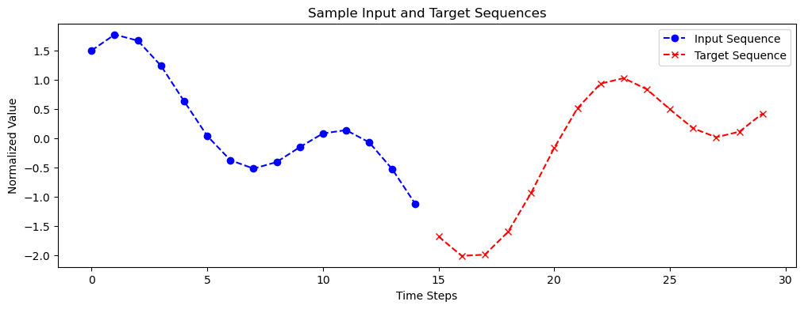

# !pip install torch matplotlib numpySeq2Seq Transformers for Regression
In this tutorial, we’ll explore how to use a Seq2Seq Transformer model for time series forecasting. We’ll generate synthetic sine wave data, train a Transformer model to predict future values based on past observations, and visualize the results.
Introduction
Regression forecasting involves predicting future values of a sequence based on its past observations. This is crucial in various domains like finance, weather prediction, stock market analysis, and more. Traditional models like ARIMA or LSTMs have been used for regression forecasting (e.g., for time series or continuous functions), but Transformers offer a new approach with their ability to handle long-range dependencies and parallel processing capabilities.
In this tutorial, we will:
- Generate synthetic sine wave data for training and testing.
- Implement a Seq2Seq Transformer model using PyTorch.
- Train the model to forecast future values of the sine wave.
- Evaluate the model’s performance by printing the MSE score per epoch.
- Visualize the predictions compared to the true values.
1. Import Libraries
import torch
import torch.nn as nn
import torch.optim as optim
import math
import numpy as np
import matplotlib.pyplot as plt
# Ensure plots are displayed in the notebook
%matplotlib inline2. Define Configuration Parameters
# Learning parameters
learning_rate = 0.001 # Learning rate for the optimizer
decay = 0 # Weight decay (L2 regularization)
# Input and output dimensions
num_input_features = 1 # Each time step has one feature (the sine value)
num_output_features = 1 # Predicting one feature at each time step
# Training parameters
batch_size = 512
steps_per_epoch = 200
epochs = 20
# Sequence lengths
input_sequence_length = 15 # Number of past time steps provided to the model
target_sequence_length = 15 # Number of future time steps the model will predict
# Data parameters
num_signals = 2 # Number of sine waves combined to create a more complex signal
# Device configuration
device = "cuda" if torch.cuda.is_available() else "cpu"
print(f"Using device: {device}")Using device: cuda3. Generate Data
We need to generate a synthetic continuous function. We’ll create a function that generates batches of sine waves with random frequencies, amplitudes, and phases.
For training, the decoder input is the shifted version of the target sequence, starting with the last value from the encoder input.
def random_sine(batch_size, input_sequence_length, target_sequence_length,
min_frequency, max_frequency, min_amplitude, max_amplitude,
min_offset, max_offset, num_signals, seed=None):
if seed is not None:
np.random.seed(seed)
total_length = input_sequence_length + target_sequence_length
t = np.arange(0, total_length).reshape(1, -1)
while True:
# Generate random parameters for the sine waves
freqs = np.random.uniform(min_frequency, max_frequency, size=(batch_size, num_signals))
amps = np.random.uniform(min_amplitude, max_amplitude, size=(batch_size, num_signals))
phases = np.random.uniform(0, 2 * np.pi, size=(batch_size, num_signals))
offsets = np.random.uniform(min_offset, max_offset, size=(batch_size, num_signals))
# Generate sine waves and combine them
y = np.zeros((batch_size, total_length))
for i in range(num_signals):
y += (amps[:, i][:, np.newaxis] *
np.sin(2 * np.pi * freqs[:, i][:, np.newaxis] * t / total_length + phases[:, i][:, np.newaxis]) +
offsets[:, i][:, np.newaxis])
# Normalize the data
y = (y - y.mean(axis=1, keepdims=True)) / y.std(axis=1, keepdims=True)
# Split into input and target sequences
x_batch = y[:, :input_sequence_length]
y_batch = y[:, input_sequence_length:]
x_batch = x_batch.reshape(batch_size, input_sequence_length, num_input_features)
y_batch = y_batch.reshape(batch_size, target_sequence_length, num_output_features)
# Prepare decoder input by shifting target sequence and adding last encoder value
decoder_input = np.zeros((batch_size, target_sequence_length, num_output_features))
decoder_input[:, 0, :] = x_batch[:, -1, :] # Start with last value of encoder input
decoder_input[:, 1:, :] = y_batch[:, :-1, :] # Shifted target sequence
yield (x_batch, decoder_input), y_batchLet’s visualize a sample from the data generator.
# Create a data generator instance
data_gen = random_sine(
batch_size=1,
input_sequence_length=input_sequence_length,
target_sequence_length=target_sequence_length,
min_frequency=0.1,
max_frequency=3.0,
min_amplitude=0.1,
max_amplitude=1.0,
min_offset=-0.5,
max_offset=0.5,
num_signals=num_signals,
seed=42
)
# Get one batch
(encoder_input_sample, decoder_input_sample), decoder_output_sample = next(data_gen)
# Plot the sample
plt.figure(figsize=(12, 4))
x = encoder_input_sample[0].flatten()
y_true = decoder_output_sample[0].flatten()
plt.plot(range(input_sequence_length), x, "o--b", label="Input Sequence")
plt.plot(range(input_sequence_length, input_sequence_length + target_sequence_length),
y_true, "x--r", label="Target Sequence")
plt.legend(loc='best')
plt.title("Sample Input and Target Sequences")
plt.xlabel("Time Steps")
plt.ylabel("Normalized Value")
plt.show()
4. Positional Encoding
Transformers lack inherent positional information about the sequence data. To address this, we’ll implement positional encoding to provide the model with information about the position of each element in the sequence.
class PositionalEncoding(nn.Module):
def __init__(self, d_model, max_len=5000):
super(PositionalEncoding, self).__init__()
# Create position encodings
pe = torch.zeros(max_len, d_model)
position = torch.arange(0, max_len).unsqueeze(1).float()
div_term = torch.exp(torch.arange(0, d_model, 2).float() *
-(math.log(10000.0) / d_model))
pe[:, 0::2] = torch.sin(position * div_term) # Apply sine to even indices
pe[:, 1::2] = torch.cos(position * div_term) # Apply cosine to odd indices
self.register_buffer('pe', pe.unsqueeze(0))
def forward(self, x):
# Add positional encoding to input
x = x + self.pe[:, :x.size(1)].to(x.device)
return x5. Build the Transformer Model
We’ll define the Transformer model using PyTorch’s built-in Transformer modules.
Components of the transformer: - embedding: Transforms input features into a higher-dimensional space. - transformer_encoder: Processes the input sequence to create memory representations. - transformer_decoder: Generates output sequences using the encoder’s memory and the target sequence. - output_layer: Maps the decoder outputs to the desired output dimension.
class TransformerModel(nn.Module):
def __init__(self, input_dim, output_dim, d_model=128, n_heads=4, num_layers=2, d_ff=512, dropout=0.1):
super(TransformerModel, self).__init__()
self.d_model = d_model
# Input embedding layer
self.embedding = nn.Linear(input_dim, d_model)
# Positional encoding
self.pos_encoder = PositionalEncoding(d_model)
# Encoder layers
encoder_layer = nn.TransformerEncoderLayer(d_model=d_model, nhead=n_heads,
dim_feedforward=d_ff, dropout=dropout,
batch_first=True)
self.transformer_encoder = nn.TransformerEncoder(encoder_layer, num_layers=num_layers)
# Decoder layers
decoder_layer = nn.TransformerDecoderLayer(d_model=d_model, nhead=n_heads,
dim_feedforward=d_ff, dropout=dropout,
batch_first=True)
self.transformer_decoder = nn.TransformerDecoder(decoder_layer, num_layers=num_layers)
# Output layer
self.output_layer = nn.Linear(d_model, output_dim)
def forward(self, src, tgt, tgt_mask=None):
# Encode the source sequence
src = self.embedding(src) * math.sqrt(self.d_model)
src = self.pos_encoder(src)
memory = self.transformer_encoder(src)
# Encode the target sequence
tgt = self.embedding(tgt) * math.sqrt(self.d_model)
tgt = self.pos_encoder(tgt)
output = self.transformer_decoder(tgt, memory, tgt_mask=tgt_mask)
# Generate predictions
output = self.output_layer(output)
return output6. Training the Model
Instantiate the model.
# Instantiate the transformer model
model = TransformerModel(
input_dim=num_input_features,
output_dim=num_output_features,
d_model=128,
n_heads=4,
num_layers=2,
d_ff=512,
dropout=0.1
).to(device)Define the optimizer and loss function. In this case, we will use mean squared error (MSE).
optimizer = optim.Adam(model.parameters(), lr=learning_rate, weight_decay=decay)
loss_fn = nn.MSELoss()Generate the target mask - we need to create a mask to prevent the model from “seeing” future positions in the target sequence during training.
def generate_square_subsequent_mask(sz):
mask = torch.triu(torch.full((sz, sz), float('-inf')), diagonal=1)
return maskTo monitor the model’s performance during training, we’ll create a validation data generator that provides a fixed validation dataset.
# Create a validation data generator
valid_data_generator = random_sine(
batch_size=512,
input_sequence_length=input_sequence_length,
target_sequence_length=target_sequence_length,
min_frequency=0.1,
max_frequency=1.0,
min_amplitude=0.1,
max_amplitude=1.0,
min_offset=-0.5,
max_offset=0.5,
num_signals=num_signals,
seed=2021 # Fixed seed for reproducibility
)
# Generate validation data (one epoch's worth)
(valid_encoder_inputs, valid_decoder_inputs), valid_decoder_outputs = next(valid_data_generator)
valid_encoder_inputs = torch.tensor(valid_encoder_inputs, dtype=torch.float32).to(device)
valid_decoder_inputs = torch.tensor(valid_decoder_inputs, dtype=torch.float32).to(device)
valid_decoder_outputs = torch.tensor(valid_decoder_outputs, dtype=torch.float32).to(device)Next, we create a training function to compute and print the MSE score for each epoch using the validation dataset. We set the model to evaluation mode (model.eval()) during validation to disable dropout layers.
def train(model, data_generator, optimizer, loss_fn, epochs, steps_per_epoch, valid_data):
model.train()
for epoch in range(epochs):
epoch_loss = 0.0
for step in range(steps_per_epoch):
(encoder_input, decoder_input), decoder_output = next(data_generator)
encoder_input = torch.tensor(encoder_input, dtype=torch.float32).to(device)
decoder_input = torch.tensor(decoder_input, dtype=torch.float32).to(device)
decoder_output = torch.tensor(decoder_output, dtype=torch.float32).to(device)
# Generate target mask
tgt_mask = generate_square_subsequent_mask(decoder_input.size(1)).to(device)
# Forward pass
optimizer.zero_grad()
output = model(encoder_input, decoder_input, tgt_mask)
loss = loss_fn(output, decoder_output)
# Backward pass and optimization
loss.backward()
optimizer.step()
epoch_loss += loss.item()
print(f"Epoch {epoch+1}/{epochs}, Step {step+1}/{steps_per_epoch}, Loss: {loss.item():.4f}", end='\r')
avg_epoch_loss = epoch_loss / steps_per_epoch
# Evaluate on validation data
model.eval()
with torch.no_grad():
tgt_mask = generate_square_subsequent_mask(valid_decoder_inputs.size(1)).to(device)
valid_output = model(valid_encoder_inputs, valid_decoder_inputs, tgt_mask)
valid_loss = loss_fn(valid_output, valid_decoder_outputs).item()
model.train()
print(f"Epoch {epoch+1}/{epochs}, Training Loss: {avg_epoch_loss:.4f}, Validation MSE: {valid_loss:.4f}")Now, let’s train the model.
# Create the training data generator
train_data_generator = random_sine(
batch_size=batch_size,
input_sequence_length=input_sequence_length,
target_sequence_length=target_sequence_length,
min_frequency=0.1, max_frequency=1.0, # Reduced frequency range for simplicity
min_amplitude=0.1, max_amplitude=1.0,
min_offset=-0.5, max_offset=0.5,
num_signals=num_signals,
seed=1969
)
# Start training with validation
train(model, train_data_generator, optimizer, loss_fn, epochs, steps_per_epoch,
valid_data=(valid_encoder_inputs, valid_decoder_inputs, valid_decoder_outputs))Epoch 1/20, Training Loss: 0.0981, Validation MSE: 0.0043
Epoch 2/20, Training Loss: 0.0063, Validation MSE: 0.0023
Epoch 3/20, Training Loss: 0.0038, Validation MSE: 0.0014
Epoch 4/20, Training Loss: 0.0028, Validation MSE: 0.0008
Epoch 5/20, Training Loss: 0.0023, Validation MSE: 0.0007
Epoch 6/20, Training Loss: 0.0020, Validation MSE: 0.0021
Epoch 7/20, Training Loss: 0.0018, Validation MSE: 0.0008
Epoch 8/20, Training Loss: 0.0017, Validation MSE: 0.0004
Epoch 9/20, Training Loss: 0.0015, Validation MSE: 0.0007
Epoch 10/20, Training Loss: 0.0014, Validation MSE: 0.0008
Epoch 11/20, Training Loss: 0.0013, Validation MSE: 0.0005
Epoch 12/20, Training Loss: 0.0012, Validation MSE: 0.0004
Epoch 13/20, Training Loss: 0.0012, Validation MSE: 0.0010
Epoch 14/20, Training Loss: 0.0010, Validation MSE: 0.0010
Epoch 15/20, Training Loss: 0.0010, Validation MSE: 0.0006
Epoch 16/20, Training Loss: 0.0010, Validation MSE: 0.0006
Epoch 17/20, Training Loss: 0.0009, Validation MSE: 0.0002
Epoch 18/20, Training Loss: 0.0009, Validation MSE: 0.0003
Epoch 19/20, Training Loss: 0.0008, Validation MSE: 0.0004
Epoch 20/20, Training Loss: 0.0008, Validation MSE: 0.00077. Evaluating the Model
After training, we’ll evaluate the model on test data to see how well it generalizes.
# Generate test data
test_data_generator = random_sine(
batch_size=1000,
input_sequence_length=input_sequence_length,
target_sequence_length=target_sequence_length,
min_frequency=0.1, max_frequency=1.0, # Consistent frequency range
min_amplitude=0.1, max_amplitude=1.0,
min_offset=-0.5, max_offset=0.5,
num_signals=num_signals,
seed=2000 # Different seed for test data
)
# Get a batch of test data
(x_test, _), y_test = next(test_data_generator)8. Make Predictions
We’ll use the trained model to make predictions on the test data. At each time step, the model predicts the next value and appends it to the decoder input for the next prediction.
# Convert test data to tensors
x_encoder_test = torch.tensor(x_test, dtype=torch.float32).to(device)
# Initialize decoder input with the last value from the encoder input
decoder_input = x_encoder_test[:, -1:, :] # Shape: [batch_size, 1, num_output_features]
# Set the model to evaluation mode
model.eval()
# Make predictions step by step
y_test_predicted = []
with torch.no_grad():
for t in range(target_sequence_length):
tgt_mask = generate_square_subsequent_mask(decoder_input.size(1)).to(device)
output = model(x_encoder_test, decoder_input, tgt_mask)
next_value = output[:, -1:, :] # Get the last time step prediction
y_test_predicted.append(next_value.cpu().numpy())
# Append the next_value to decoder_input
decoder_input = torch.cat((decoder_input, next_value.to(device)), dim=1)
# Concatenate predictions along the time dimension
y_test_predicted = np.concatenate(y_test_predicted, axis=1)9. Visualize Predictions
Let’s visualize the model’s predictions compared to the true future values.
# Select a few random examples to plot
indices = np.random.choice(range(x_test.shape[0]), replace=False, size=5)
for index in indices:
plt.figure(figsize=(12, 4))
x = x_test[index, :, :]
y_true = y_test[index, :, :]
y_pred = y_test_predicted[index, :, :]
# Plot the past values
plt.plot(range(input_sequence_length), x.flatten(), "o--b", label="Input Sequence")
# Plot the true future values
plt.plot(range(input_sequence_length, input_sequence_length + target_sequence_length),
y_true.flatten(), "x--r", label="True Future Values")
# Plot the predicted future values
plt.plot(range(input_sequence_length, input_sequence_length + target_sequence_length),
y_pred.flatten(), "o--g", label="Predicted Future Values")
plt.legend(loc='best')
plt.title("Model Predictions vs. True Values")
plt.xlabel("Time Steps")
plt.ylabel("Normalized Value")
plt.show()Next Steps:
- Try changing the number of sine waves, sequence lengths, or model parameters to see how the model’s performance is affected.
- Apply the model to real-world time series datasets, such as stock prices or weather data.
- Implement techniques like teacher forcing during training to improve performance.